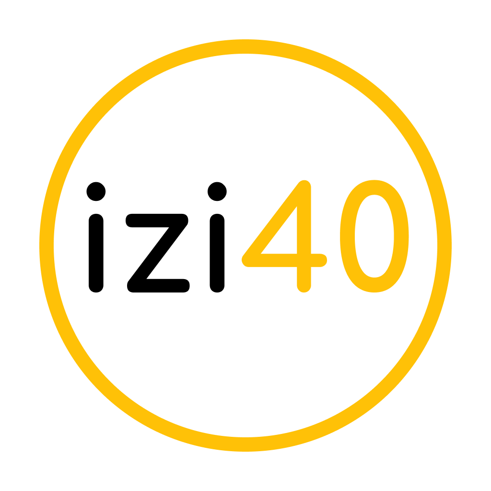

{% extends 'base.html' %}
{% block title %}
Главная
{% endblock %}
{% block body %}

Сегодня остро ощущается нехватка специалистов в социально-экономической сфере, аналитиков, способных
создавать
модели функционирования различных экономических, социальных и политических систем. Не меньшая
заинтересованность
наблюдается в специалистах, обладающих хорошей инженерной подготовкой, способных создавать современные
конкурентоспособные программно-аппаратные комплексы для систем 3D-моделирования и визуализации, защиты
компьютерной информации, ракетно-космических систем и робототехники.
Учащийся направления "Информатика, инженерия и математика" – это лицеист, любящий математику, активно
занимающийся программированием или интересующийся физикой.
"izi40" - сайт, который поможет вам подготовиться к поступлению на направеление "Информатика, инженерия и
математика (МатИнфо)". А еще вы сможете узнать свои шансы на поступление. Калькулятор считает вероятность на основе
опыта учеников, которые уже поступили в лицей.
{% endblock %}